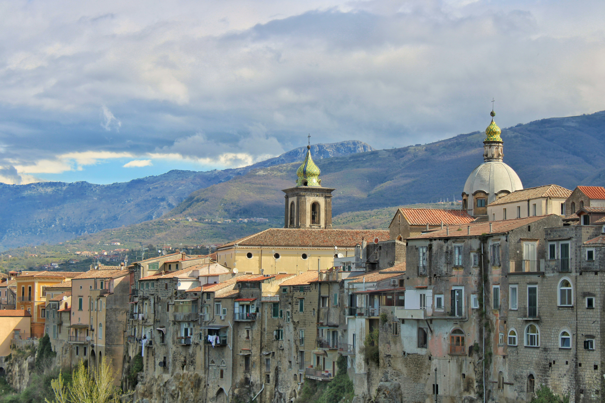
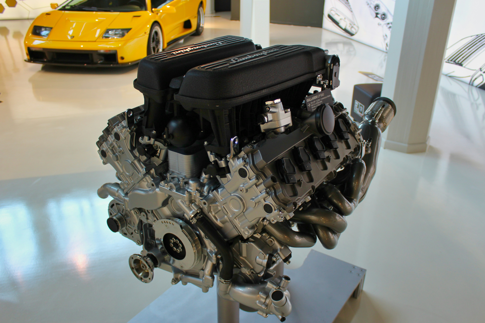
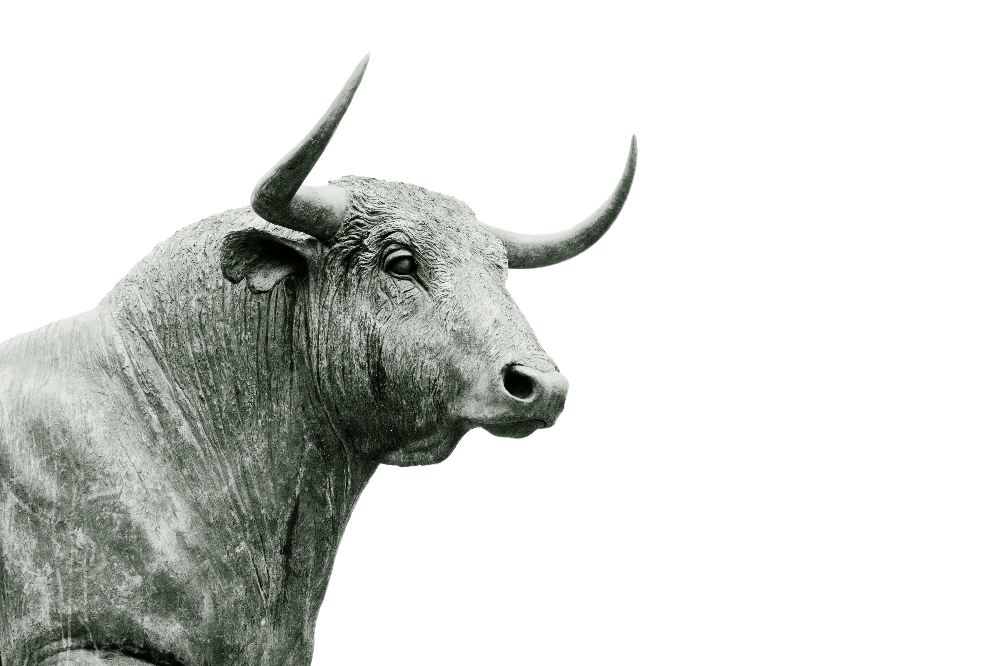

What is Lamborghini?

Founded in 1963 by Ferruccio Lamborghini in Sant'Agata Bolognese, Italy.

Known for exotic supercars with extremely aggressive styling and dramatic designs.

Many Lamborghinis use powerful V10 or V12 engines, giving them very high performance and distinctive exhaust sounds.

The logo is a charging bull because Ferruccio Lamborghini was a Taurus and had an interest in bullfighting.